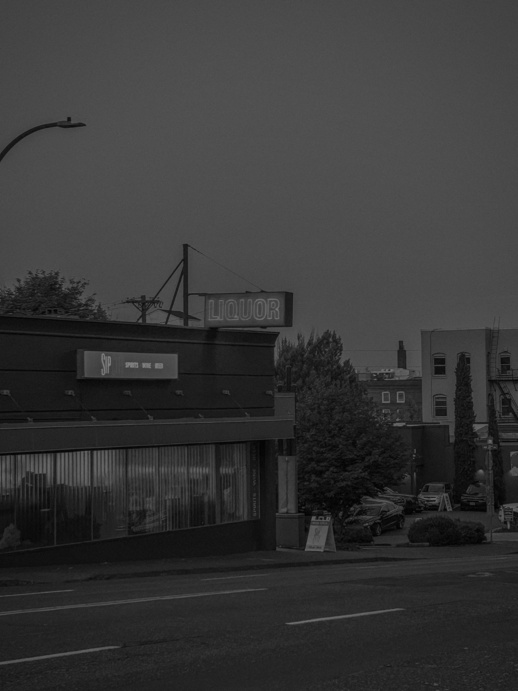
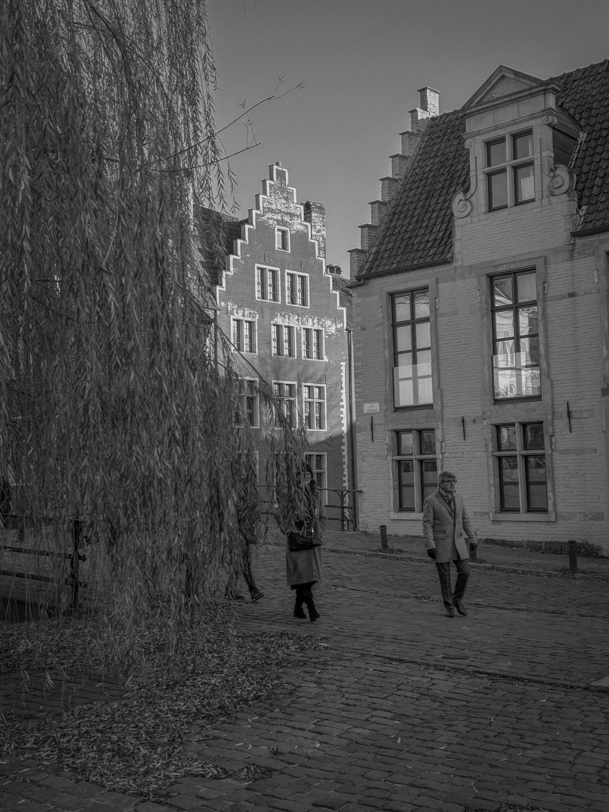
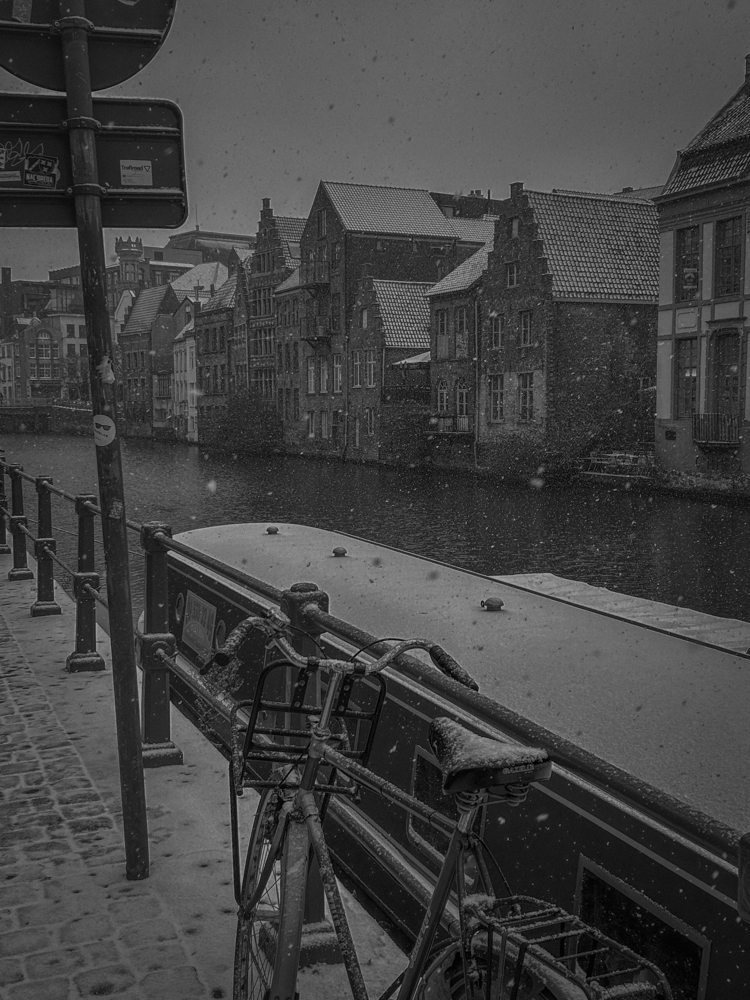

Taking a photograph is easier now than it ever has been. Try going a day without seeing someone capture an image, or, for that matter, doing so yourself. It may be difficult. The action has taken precedence over the product. That is, we often take photographs not to produce an image but for the sake of taking a photograph itself. Whereas before, photographs had depth (in that there was something within it worth finding), most have now been rendered flat. Yet the iPhone has created a profound possibility — to make photographs without the burden of doing so in the presence of a camera. Over the past six months, I have captured moments with my iPhone, a process called "mobile" photography among photographers. Many have been bad, but others tell a unique story. In processing the photographs, I have flattened them as much as I can (that is, reducing the highlights and increasing the shadows). Still, there is depth and story.


